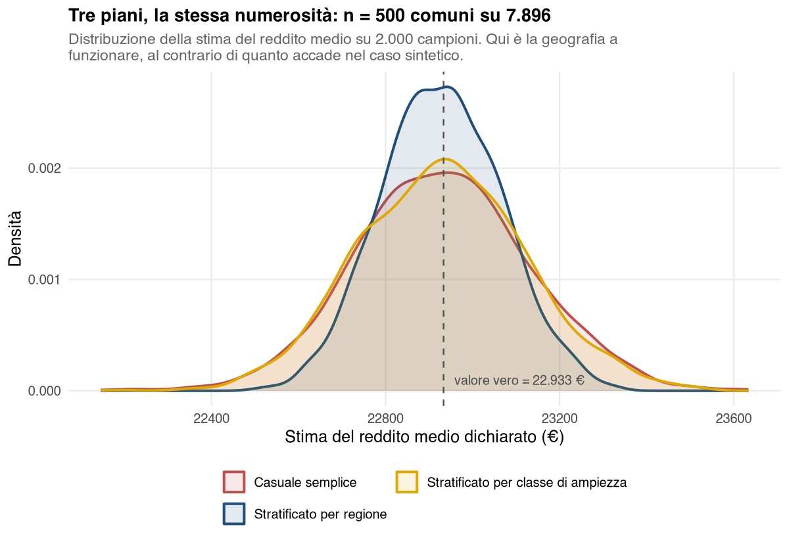

36 Caso reale — Campionare un frame vero: i comuni italiani
I tre casi studio precedenti usano dati sintetici, e non per pigrizia: sono gli unici in cui la risposta è nota in anticipo, e quindi gli unici in cui si può dimostrare che un metodo funziona. Quando si conosce il segmento vero di ogni rispondente, l’indice di Rand corretto (ARI, Adjusted Rand Index) fra la partizione trovata e quella vera è una verifica, non un’opinione.
I quattro casi che seguono servono all’altra metà del mestiere: i dati veri arrivano con righe fantasma, nomi scritti in due modi, indicatori il cui titolo dice il contrario della definizione, distribuzioni così storte da mandare a sbattere l’algoritmo. Niente di tutto questo compare in un dataset costruito per l’esercizio, e tutto questo occupa la maggior parte del tempo di un’analisi reale.
Le fonti, le licenze e le trasformazioni applicate a ciascun file sono documentate in data/reali/README.md.
36.1 La situazione
Una società di geomarketing deve stimare il reddito medio dichiarato nei comuni italiani: è il dato con cui calibra i modelli di attrattività con cui consiglia ai clienti dove aprire un punto vendita. Il dato ufficiale esiste comune per comune, ma interrogarlo, validarlo e tenerlo aggiornato per tutti e 7.896 i comuni costa; la domanda è se basti un campione, e come costruirlo.
È la stessa domanda del caso sintetico, su un frame vero. E la risposta, su questi dati, è l’opposto.
36.2 Il frame, e le sue imperfezioni
Il file del Dipartimento delle Finanze contiene una riga per comune, con numero di contribuenti, numero di dichiaranti e ammontare complessivo dichiarato. Il rapporto fra gli ultimi due è la variabile di interesse, reddito_medio.
Prima di campionare vanno guardate due cose.
La prima è una riga che non è un comune. Il file ufficiale ne contiene 7.897, ma una ha codice 0, denominazione 0 e regione Mancante/errata: raccoglie i 5.305 contribuenti che non è stato possibile attribuire a un comune. Non è un’unità della popolazione e va tolta dal frame, altrimenti entra nel campione con la stessa probabilità di tutte le altre: \(500/7897\), circa il 6%, con il campione del Passo 2. Restano 7.896 comuni.
La seconda è quale parametro si sta stimando. Il reddito medio dei comuni — la media delle 7.896 medie comunali — vale 22.933 €. Il reddito medio dei dichiaranti — l’ammontare totale diviso per il numero totale di dichiaranti — vale 25.818 €. Sono due parametri diversi di due popolazioni diverse: nel primo l’unità è il comune, nel secondo il dichiarante. La differenza di quasi 2.900 € nasce dal fatto che i comuni grandi, più ricchi della media, pesano quanto i piccoli nella prima e molto di più nella seconda.
Per decidere dove aprire un punto vendita l’unità di analisi è il comune, quindi il parametro giusto è il primo. Se invece la domanda fosse «quanto dichiara in media un dichiarante italiano», il parametro sarebbe il secondo e il piano di campionamento andrebbe costruito sui dichiaranti, non sui comuni. Scambiarli è un errore che non produce nessun messaggio di avviso: il calcolo fila liscio e la risposta è alla domanda sbagliata.
Il resto della descrittiva: deviazione standard 4.592 €, minimo 8.256 €, massimo 72.157 €, asimmetria +0,64. Una coda a destra c’è, ma moderata.
36.3 Passo 1 — Quante interviste, pardon, quanti comuni
Menu: Analisi → AnalisiMercato → Campionamento → Numerosità campionaria
Obiettivo: margine di ±400 € al 95%, con \(\sigma \approx 4.600\) € stimata da un’estrazione precedente.
Parametri dell’indagine
| Parametro | N | Δ | Confidenza | z (α/2) | P / σ | Schema |
|---|---|---|---|---|---|---|
| Media | 7.896 | 400,00 | 95% | 1,96 | 4.600,00 | Senza reinserimento (SSR) |
Numerosità campionaria
| n teorico | n consigliato | Frazione f = n/N | Var attesa dello stimatore | Errore standard atteso |
|---|---|---|---|---|
| 477,379 | 478 | 0,061 | 41.593,21 | 203,94 |
Servono 478 comuni; si lavora con 500. Senza fattore correttivo ne servirebbero 509 (\(n_0 = 508{,}03\)): con \(f \approx 6\%\), appena sopra la soglia pratica del 5%, la correzione fa risparmiare una trentina di comuni.
36.4 Passo 2 — Casuale semplice
Menu: Campionamento casuale semplice · n → 500, Seed → 20260922, Variabile identificativa → codice_istat, Estrai il campione (frequenza nel campione) attivo
Il modulo aggiunge la colonna freq_SSR (da campionamento casuale semplice senza reinserimento, SSR), che vale 1 per i comuni estratti. Con Dati → Calcola si costruisce reddito_campione, con la formula IF(freq_SSR == 1, reddito_medio): conserva il reddito dei soli comuni estratti e lascia vuoti gli altri, come in § P-14. Su questa variabile si lancia Intervalli di confidenza, con N = 7896 e fattore (1−f) attivo:
Intervallo di confidenza
| Confidenza | Stima | Errore standard | Ampiezza ± Δ | LB | UB |
|---|---|---|---|---|---|
| 95% | 23.301,04 | 196,49 | 385,12 | 22.915,92 | 23.686,16 |
La stima è 23.301 € contro un valore vero di 22.933 €: l’intervallo, compreso fra l’estremo inferiore e quello superiore (LB e UB, lower e upper bound), lo contiene, con un margine di ±385 € in linea con il progetto.
36.5 Passo 3 — Stratificare: qui funziona la geografia
Menu: Campionamento stratificato · Metodo → Proporzionale, n → 500
Nel caso sintetico la stratificazione per area geografica non serviva a niente. Qui è l’opposto, e vale la pena capire perché: là l’area spostava la spesa dei clienti di poco rispetto alla sua variabilità (\(\eta^2\) dell’1,6%), qui il reddito dichiarato ha una struttura territoriale fortissima.
| Ripartizione | Reddito medio dei comuni |
|---|---|
| Nord-ovest | 25.596 € |
| Nord-est | 25.584 € |
| Centro | 22.768 € |
| Sud | 18.469 € |
| Isole | 18.355 € |
Le due candidate sono la regione (21 strati, con le due province autonome separate come nella fonte) e la classe di ampiezza demografica (4 strati, già presente nel file come classe_ampiezza: fino a 1.000, 1.001–5.000, 5.001–20.000, oltre 20.000 contribuenti).
Allocazione per strato — stratificazione per regione (estratto, righe riordinate per N_j decrescente; jamovi le elenca in ordine alfabetico)
| Strato | N_j | W_j | σ_j | n_j | f_j = n_j / N_j |
|---|---|---|---|---|---|
| Lombardia | 1.502 | 0,19 | — | 95 | 0,06 |
| Piemonte | 1.180 | 0,15 | — | 75 | 0,06 |
| Veneto | 560 | 0,07 | — | 35 | 0,06 |
| Campania | 550 | 0,07 | — | 35 | 0,06 |
| … | |||||
| Umbria | 92 | 0,01 | — | 6 | 0,07 |
| Valle d’Aosta | 74 | 0,01 | — | 5 | 0,07 |
Nessuno strato scende sotto la soglia di rappresentanza minima: il più piccolo, la Valle d’Aosta, riceve 5 comuni su 74 (§ P-10).
36.6 Passo 4 — Quanto vale ciascun piano
La quota \(\eta^2\) di variabilità del reddito medio spiegata dagli strati, da ANOVA → ANOVA (analisi della varianza) spuntando \(\eta^2\) in Dimensione dell’Effetto, vale 0,535 per la regione e 0,071 per la classe di ampiezza.
Con strati già dati, \(\eta^2\) è la quota di varianza spiegata dagli strati stessi, e con allocazione proporzionale il Design Effect (Deff) atteso è circa \(1-\eta^2\). Come nel caso sintetico, la Formula analitica non va alimentata con \(\eta^2\) (conterebbe due volte l’effetto del taglio in \(L\) classi, § P-15): si usa la modalità Da due varianze, con \(1-\eta^2\) per il piano stratificato e 1 per il casuale semplice. Il casuale semplice di confronto è quello del Passo 2, senza reinserimento: con \(f \approx 6\%\) la differenza con il campionamento casuale semplice con reinserimento (SCR) non è del tutto trascurabile. Il campo del modulo si chiama comunque Varianza nel SCR di riferimento.
Modalità → Da due varianze, Varianza nel piano complesso → 0,465 (regione), Varianza nel SCR di riferimento → 1, Numerosità di riferimento (n) → 500
| Deff | Efficienza vs SCR | n di riferimento | Numerosità richiesta dal piano | Numerosità efficace di n unità raccolte col piano |
|---|---|---|---|---|
| 0,465 | Maggiore (Deff < 1) | 500 | 233 | 1.076 |
Modalità → Da due varianze, Varianza nel piano complesso → 0,929 (classe di ampiezza), Varianza nel SCR di riferimento → 1, Numerosità di riferimento (n) → 500
| Deff | Efficienza vs SCR | n di riferimento | Numerosità richiesta dal piano | Numerosità efficace di n unità raccolte col piano |
|---|---|---|---|---|
| 0,929 | Maggiore (Deff < 1) | 500 | 465 | 539 |
Stratificare per regione più che dimezza la varianza: 500 comuni scelti così valgono quanto circa 1.000 estratti a caso. Il modulo indica 1.076, cioè \(500/0{,}465\) arrotondato per eccesso: con \(f \approx 6\%\) il conto esatto, che tiene conto della frazione di campionamento, dà un valore un po’ più basso (capitolo Campionamento). Stratificare per dimensione del comune fa guadagnare il 7%.
36.7 Passo 5 — La verifica
Ripetendo 2.000 volte l’estrazione con i tre piani:

| Piano | Errore standard | Margine 95% | Deff empirico | Deff atteso (1 − η²) |
|---|---|---|---|---|
| Casuale semplice (senza reinserimento) | 199,0 | ±390 € | 1,000 | — |
| Stratificato per regione | 136,9 | ±268 € | 0,473 | 0,465 |
| Stratificato per classe di ampiezza | 191,9 | ±376 € | 0,930 | 0,929 |
Deff attesi e simulazione concordano a meno di un punto percentuale, su dati che nessuno ha costruito perché concordassero.
36.8 Che cosa cambia rispetto al caso sintetico
Il confronto fra i due capitoli è la lezione vera.
| Caso sintetico (clienti) | Caso reale (comuni) | |
|---|---|---|
| Stratificare per geografia | Deff 0,984 — inutile | Deff 0,465 — più che dimezza la varianza |
| Stratificare per dimensione / reddito | Deff 0,390 — più che dimezza la varianza | Deff 0,929 — quasi inutile |
La tecnica è la stessa, la variabile giusta è l’opposta. Non esiste una variabile di stratificazione «buona»: esiste una variabile che, su quel fenomeno e in quella popolazione, separa gruppi omogenei al loro interno. L’unico modo per saperlo è misurarlo — con l’\(R^2\) prima di campionare, se sul frame è disponibile la variabile di interesse o una sua buona proxy (per esempio il valore di un’edizione precedente), o con una prova pilota se non lo è.
E c’è un corollario poco comodo: la stratificazione per regione funziona perché il reddito in Italia ha una struttura Nord-Sud molto marcata. È un vantaggio statistico che nasce da una disuguaglianza economica: la stessa struttura che rende efficiente il piano di campionamento è quella che il caso R-04 ritrova come prima componente principale delle regioni italiane.
36.9 Le funzioni usate
| Passo | Analisi | Opzioni principali |
|---|---|---|
| Pulire il frame | — (già fatto in data/reali/comuni_redditi.csv; sul file originale del MEF: Dati → Filtri) |
escludere la riga con comune non attribuito |
| Dimensionare | Numerosità campionaria | Media; Δ = 400; 95%; σ = 4600; N = 7896 |
| Estrarre | Campionamento casuale semplice | n = 500; seed = 20260922; codice_istat; estrai il campione (poi reddito_campione = IF(freq_SSR == 1, reddito_medio) con Dati → Calcola) |
| Stimare | Intervalli di confidenza | reddito_medio (numerica → media); N = 7896; fattore (1−f) |
| Distribuire | Campionamento stratificato | regione / classe_ampiezza; proporzionale; n = 500 |
| Confrontare | Design Effect | Da due varianze; 1 − η² (da ANOVA) e 1; n di riferimento = 500 |
36.10 Da portare nel report
- Quale unità statistica e quale parametro: media fra comuni o fra dichiaranti.
- Quante righe del file di origine sono state escluse e perché.
- Anno d’imposta dei dati e data di scaricamento: il file cambia ogni anno.
- Variabile di stratificazione, con l’\(R^2\) che ne giustifica la scelta.
- Deff usato per correggere il margine di errore.